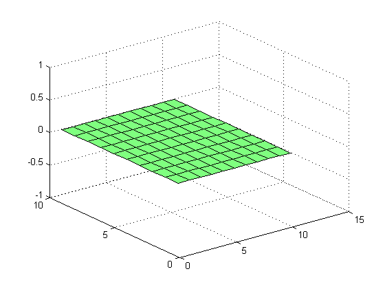
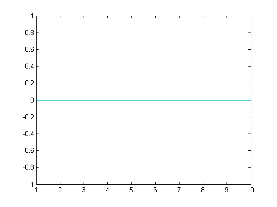

clear all;
close all;
folder='E:\Matlab Program\Programs\RNSC\Rainfall NC';
filetype='*.nc';
f=fullfile(folder,filetype);
d=dir(f);
for k=1:numel(d);
rainlat = ncread(fullfile(folder,d(k).name),'lat');
rainlog = ncread(fullfile(folder,d(k).name),'lon');
rainrec = ncread(fullfile(folder,d(k).name),'RF');
rainval = rainlat(:,1);
rain_latval = rainlat(:,1);
rain_logval = rainlog(:,1);
latr = [];
for i = 1:length(rainval)
if(rainval(i)>=13.125 && rainval(i)<=15.375)
latr(i) = i;
end
end
rainlogval = rainlog(:,1);
logr = [];
for i = 1:length(rainlogval)
if(rainlogval(i)>=77.625 && rainlogval(i)<=80.125)
logr(i) = i;
end
end
latr = nonzeros(latr)';
logr = nonzeros(logr)';
rain_recval = zeros(length(latr),length(logr));
for r = 1:length(latr)
for c = 1:length(logr)
rain_recval(r,c) = rainrec([latr(r)], [logr(c)]);
end
end
close all;
figure();
surfl(rain_recval)
figure();
plot(rain_recval);
path = 'E:\Matlab Program\Programs\RNSC\Rainfall Extracted_NC';
filename = [path, filesep, 'Rainfall_Extract',num2str(k)] ;
xlswrite(filename,rain_recval);
disp(filename)
end
web('html/read_rain_NC.html')
E:\Matlab Program\Programs\RNSC\Rainfall Extracted_NC\Rainfall_Extract1
E:\Matlab Program\Programs\RNSC\Rainfall Extracted_NC\Rainfall_Extract2
 